Four papers accepted to MICCAI 2026
About
I am a Ph.D. candidate at GSDS, KAIST, advised by Prof. Mun Yong Yi* in the Knowledge System Lab. My research focuses on Medical Image Analysis, especially Multiple Instance Learning for whole-slide and microscopy histopathology, uncertainty calibration, and multimodal diagnosis systems.
Open to collaborations
News
A paper accepted to Journal of Intelligent Manufacturing (IF: 7.4)
A paper accepted to SIGIR 2026
Two papers accepted to CVPR 2026
A paper accepted to WACV 2026
A paper accepted to MICCAI 2025 Workshop
Two papers accepted to ISBI 2025
Experience
Graduate Researcher & Project Manager
Knowledge System Lab, GSDS / ISE, KAIST
Multimodal AI-based computer-aided diagnosis for gastrointestinal endoscopic biopsies (Seegene Medical Foundation). Multiclass and multi-resolution MIL, priority-aware mistake severity training, and decision making under uncertainty.
Graduate Researcher
Knowledge System Lab, GSDS / ISE, KAIST
Next-generation medical diagnosis system based on AI (Seegene Medical Foundation). Whole-slide segmentation, weakly supervised microscopy pathology classification, microscopy diagnosis team manager.
Undergraduate Research Assistant
Data Intelligence Lab, IE, Seoultech
Safety monitoring model based on IoT for subminiature sensors (IITP). Time-series modeling and anomaly detection in sequential data.
Publications
Selected
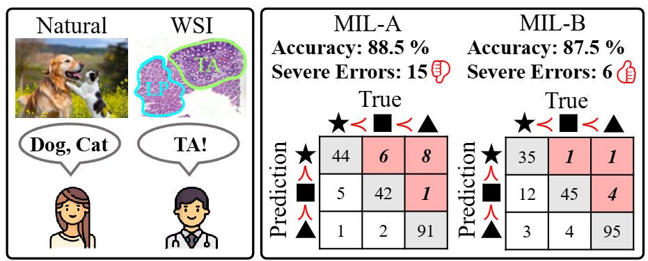
Every Error has Its Magnitude: Asymmetric Mistake Severity Training for Multiclass Multiple Instance Learning
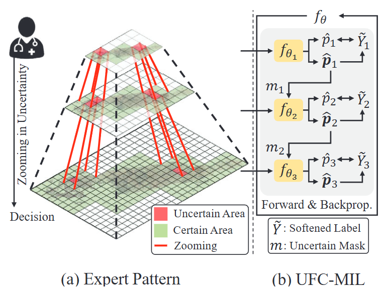
Diagnose Like A REAL Pathologist: An Uncertainty-Focused Approach for Trustworthy Multi-Resolution Multiple Instance Learning
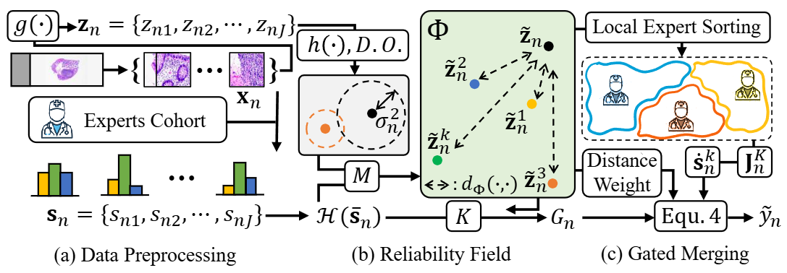
RaLMPH: Reliability-aware Learning for Multi-Pathologist Harmonization in Whole-Slide Image Classification
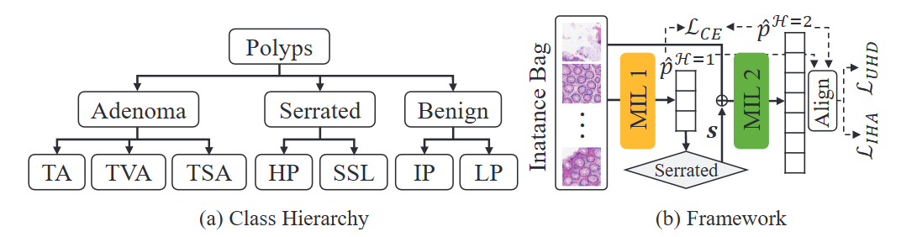
Priority-Aware Clinical Pathology Hierarchy Training for Multiple Instance Learning
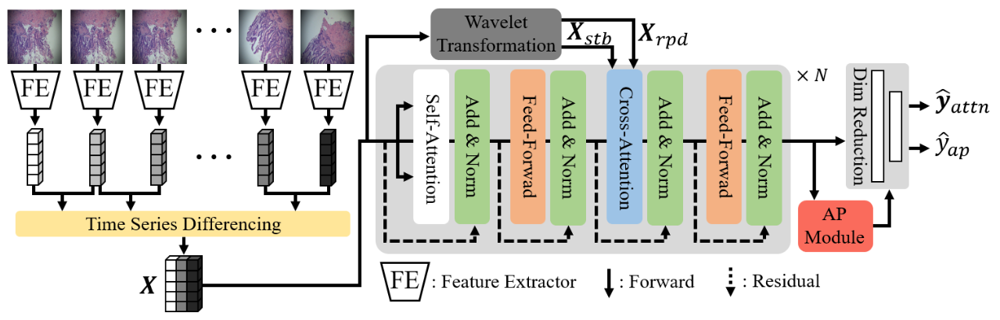
Towards Classifying Histopathological Microscope Images as Time Series Data
Other
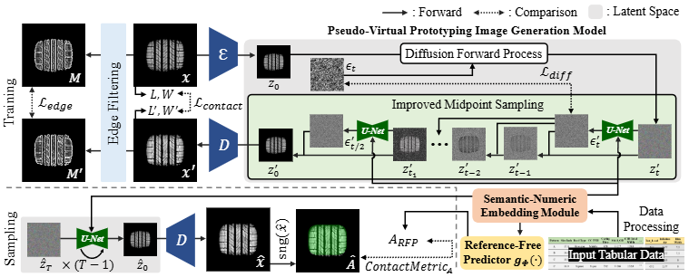
Beyond Creative Generation: A Deep Generative Framework for High-Fidelity Pseudo-Virtual Prototyping and Design Evaluation
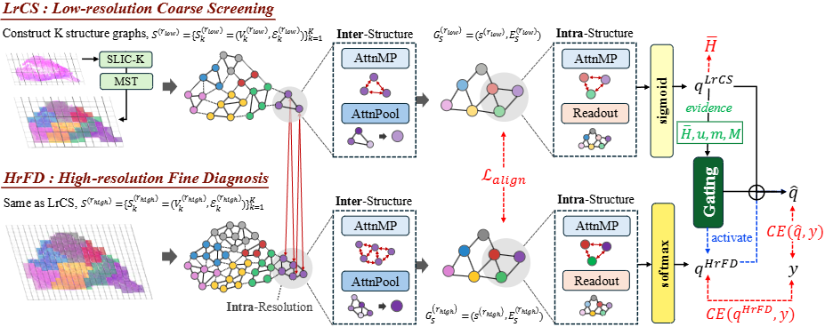
DiagMIL: Uncertainty-Gated Coarse-to-Fine Multi-Resolution MIL for WSI Diagnosis
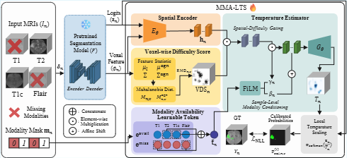
Missing Modality-Aware Calibration for Trustworthy Brain Tumor Segmentation
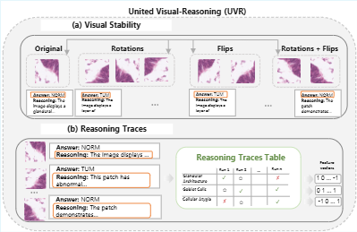
Reasoning Trace Divergence: An Empirical Signal for Trustworthy Black-Box MLLMs in Histopathology Classification
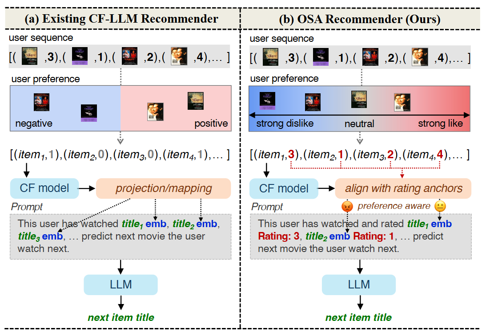
Every Preference Has Its Strength: Injecting Ordinal Semantics into LLM-Based Recommenders
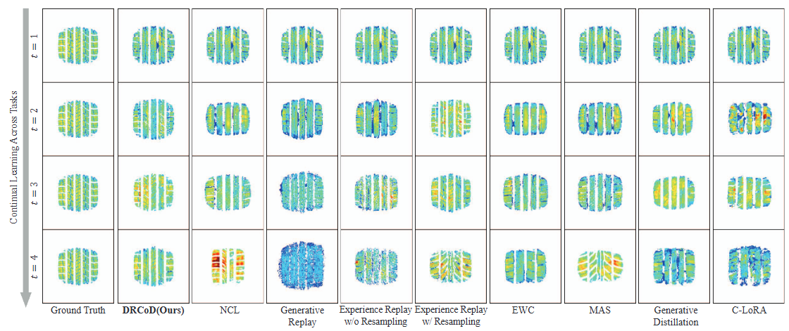
DRCoD: Toward Robust Continual Learning of Diffusion Models for Tire Manufacturing Prototyping
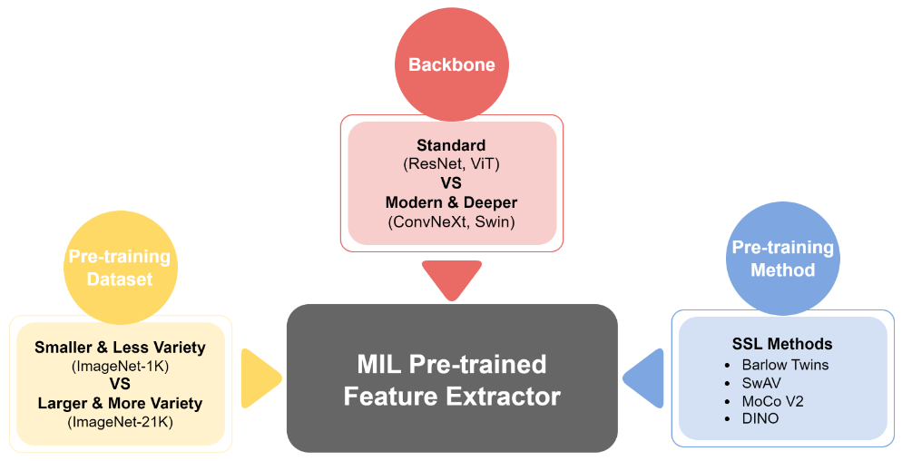
Rethinking Pre-Trained Feature Extractor Selection in MIL for Whole Slide Image Classification
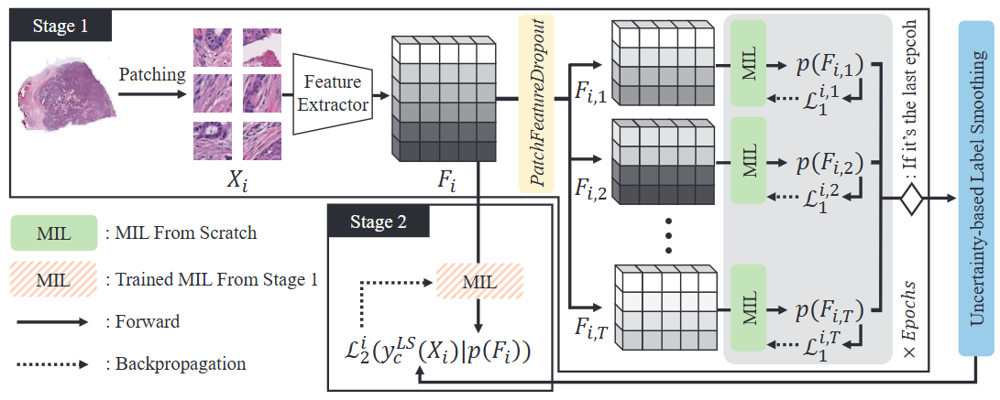
Uncertainty-based Data-wise Label Smoothing for Calibrating MIL in Histopathology Image Classification
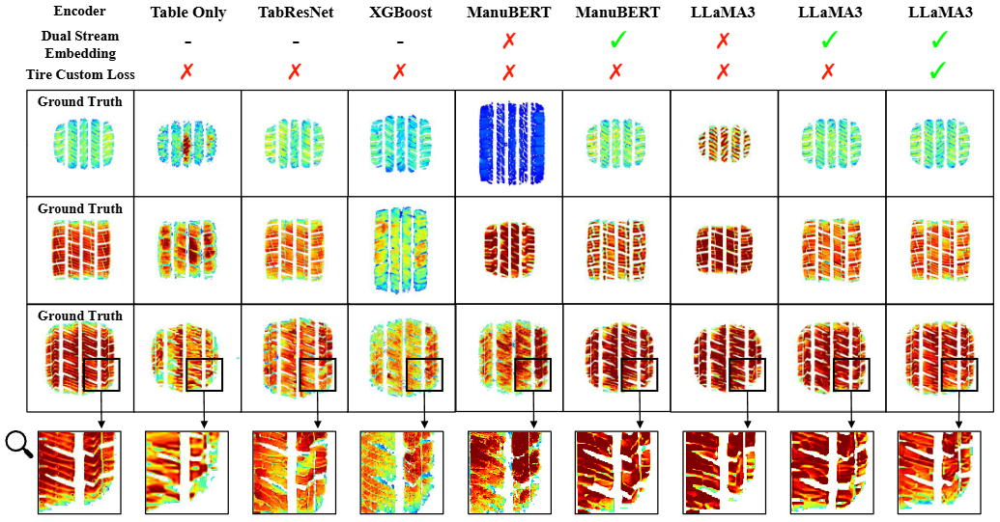
TireDiff: A Framework for Conditional Tire Footprint Images Generation from Manufacturing Tabular Data
Projects
TBD
Seegene Medical Foundation · KAIST
-
Development of a Multimodal Artificial Intelligence-Based Computer-Aided Diagnosis System for Gastrointestinal Endoscopic Biopsies
Seegene Medical Foundation · KAIST
Based on digital whole-slide images (WSIs) of colon tissue specimens, we developed a diagnostic model tailored for non-malignant cases. In this project, our primary focus was placed on: (a) pre-processing massive WSI datasets, (b) building a high-fidelity model capable of expert-level collaboration with pathologists, (c) optimizing the model's diagnostic prioritization for specimens, and (d) enhancing the model's rejection capabilities for uncertain estimations. Serving as the project manager, I not only led the entire lifecycle but also spearheaded the technical solutions for areas (a) through (d), which ultimately resulted in the successful conclusion of the project and peer-reviewed publicatios.
A Study on the Next Generation Medical Diagnosis System Based on AI
Seegene Medical Foundation · KAIST
This project aimed to classify gastric and colorectal biopsy samples exhibiting benign conditions versus dysplasia within digital pathology workflows. We pioneered approaches to efficiently train models on gigapixel Whole Slide Images (WSIs) while ensuring robust adaptation to newly integrated datasets. Notably, I served as the Project Manager (PM) and lead developer for a follow-up study focused on diagnostic models for noisy, microscope-based images. In my role as PM, I successfully translated Seegene’s business requirements into concrete technical specifications, steering the team to deliver high-impact engineering outcomes. Leveraging the insight that manual microscopic observations by pathologists function as time-series data, I formulated a novel distance metric based on Dynamic Time Warping (DTW). This work was successfully published at ISBI 2025. Our developed solution is currently deployed in clinical settings to cross-verify pathologists' diagnostic decisions.
IoT-based Safety Monitoring for Subminiature Sensors
IITP · Seoultech
Time-series modeling and anomaly detection for sequential sensor data in industrial safety monitoring.
Awards
🏆
CVPR 2026 Outstanding Reviewer
Top 5% among 17,491 Reviewers
🏆
KAIST ISE Research Day
Excellent Prize · 2024
🥇
Seoultech IE Capstone Competition
Grand Prize · 2020
Service
Conference Review
CVPR2026
MICCAI2026
ECCV2026
***2026
Teaching Assistant
- HanKook Tire AI Education — KAIST-IE
- DS545 Business Intelligence (BI) — KAIST-GSDS